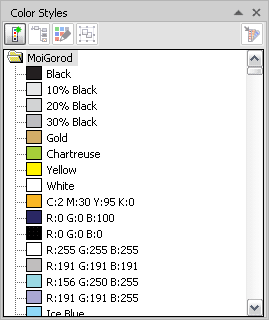

нет тока один этот такой как показал Санчо, я лошарка ))
Sancho / 19.08.2009, 10:49
Этот макрос делает пересохранение в CMX.
Sub reSaveCMX() If ActiveDocument Is Nothing Then Beep: Exit Sub Dim expopt As StructExportOptions, expflt As ExportFilter, d As Document, s$ Set expopt = CreateStructExportOptions Set d = ActiveDocument s = d.FilePath & d.name & ".cmx" Set expflt = ActiveDocument.ExportEx(s, cdrCMX6, cdrAllPages, expopt) expflt.Finish d.Close Set d = OpenDocument(s) Dim SaveOptions As StructSaveAsOptions Set SaveOptions = CreateStructSaveAsOptions With SaveOptions .EmbedVBAProject = False .Filter = cdrCDR .IncludeCMXData = False .Range = cdrAllPages .EmbedICCProfile = False .Version = cdrCurrentVersion End With d.SaveAs d.FilePath & d.name & ".cdr", SaveOptions VBA.FileSystem.Kill s End Sub
Цветовые стили в файле, они и весят. Пересохрани в CMX
( нету там никаких цветовых стилей, просто белый и черный.....()спустя 16 минут)
кароче все дело в заглюке координатов, я отразила зеркально объекты и стал весить 128 кб ))
спасибо за внимание.
.....(спустя 7 минут)
вот и облом вернула на прежнюю позицию опять метр с копейками, а с cmx сохранила весит 23 кб ((
ну что за фигня.
вообщем экспорт в епс помог, с епса в сдр и все пучком - весит 24 кб
у тебя такая проблема со всеми файлами, или только с этим? при создании нового или подобного проекта файлы столько же много весят?
saNio, всётаки как я и сказал это стили. Вот скрин с твоего файла:

Лечится это, как я уже сказал, пересохранением в CMX
нет тока один этот такой
как показал Санчо, я лошарка ))
Этот макрос делает пересохранение в CMX.
Sub reSaveCMX()
If ActiveDocument Is Nothing Then Beep: Exit Sub
Dim expopt As StructExportOptions, expflt As ExportFilter, d As Document, s$
Set expopt = CreateStructExportOptions
Set d = ActiveDocument
s = d.FilePath & d.name & ".cmx"
Set expflt = ActiveDocument.ExportEx(s, cdrCMX6, cdrAllPages, expopt)
expflt.Finish
d.Close
Set d = OpenDocument(s)
Dim SaveOptions As StructSaveAsOptions
Set SaveOptions = CreateStructSaveAsOptions
With SaveOptions
.EmbedVBAProject = False
.Filter = cdrCDR
.IncludeCMXData = False
.Range = cdrAllPages
.EmbedICCProfile = False
.Version = cdrCurrentVersion
End With
d.SaveAs d.FilePath & d.name & ".cdr", SaveOptions
VBA.FileSystem.Kill s
End Sub